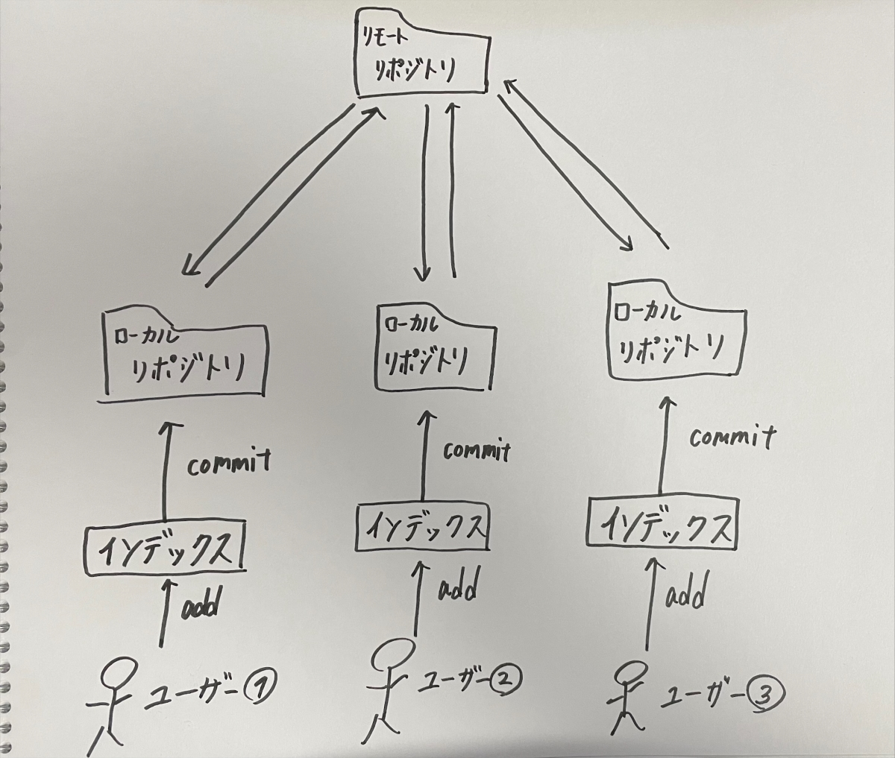

1.Gitとは
Gitとはファイルのバージョン管理が簡単に出来るツール、通称、分散型バージョン管理システムです。
また、Gitが分散型バージョン管理システムと呼ばれる理由は、以下のような特徴があるからです。
- 古いバージョンを簡単に戻せる
- 新旧のファイルを一括管理できる
- 編集した履歴を複数人で共有できる
- 複数人で修正した部分を一つに統合できる
またGitは、コードを管理するだけでなく、テキストデータや画像データ、Excelファイルなども管理することが出来ます。
それゆえ、WEBデザイナーやライター、あらゆる事務作業に活用できるシステムとして活用されています。
1.2.Gitの仕様
前提として、GitはCUIツールと呼ばれる、キーボードで入力する「コマンド」によって操作するツールです。
そして前述の通り、Gitは数多くのファイルやデータを複数人で共有するためのシステムなので、どの部分をいつ誰がどのように編集したのかを的確に共有する必要があります。
だから、GItは個人の主観に関わらず同じコマンドで同じ事象の起こるCUIツールを採用しています。
1.3.Gitを理解するための基本用語

Gitを簡略化して表した図
リポジトリ(repository)
ファイルやディレクトリを入れて保存しておく場所。
また、Gitにおけるリポジトリは2種類に分けられます。
- リモートリポジトリ→特定サーバー上に設置して複数人で共有するためのリポジトリ
- ローカルリポジトリ→ユーザーごとに設置される手元の機械で編集できるリポジトリ
2種類のリポジトリに分けることで、普段は手元にあるローカルリポジトリ、作業を共有するときはリモートリポジトリ、と使い分けることが出来ます。
コミット(commit)
ファイルやディレクトリの編集作業をローカルリポジトリに記録するために必要な操作のこと。コミットを実行するとファイルを編集した日時を記録したファイルが生成されます。
実行するごとにファイルが生成され、時系列順になって格納されるため、ファイルを編集した履歴やその内容を確認することが出来ます。
ワークツリーとインデックス
ユーザーが編集している作業中のディレクトリのことをワークツリーと言います。
また、ワークツリーと、その保存場所であるローカルリポジトリの間には、インデックスという中間領域があります。
クローン(clone)
複数人で共有しているファイル(リモートリポジトリ)をすべて自分のローカル環境(ローカルリポジトリ)に保存すること。いわゆるダウンロードを指す。
プッシュ(push)
ローカルリポジトリにあるファイルをリモートリポジトリに送信して保存する機能のこと。いわゆるアップロードを指す。
ブランチ(branch)
ファイル履歴を分岐させて記録していく機能のこと。平行して同時に行われる作業を正確に管理するためにGitにはブランチという機能があります。
これによってGitのバージョン管理を効率的にし、間違いを減らすために最も生かされている機能といえるものです。
ex.バグの修正、機能の追加 etc.
マージ(merge)
複数のブランチを一つにまとめて、完成に近づける
2.HTMLとは
コンピューターに指示を出すのがHTML
HTMLとは「Hyper Text Markup Language」(ハイパー・テキスト・マークアップ・ランゲージ)の略で、Webページの土台となるファイルを形成する言語です。
Webページに表示したい文章などを「<」「>」で挟まれた「タグ」と呼ばれる特殊な文字列で囲んで書いていきます。
「タグ」には様々な種類があり、それぞれに個別の意味があります。このタグで文字列を囲むことで指示を出し、コンピューターがそのページの構造を理解出来るようにすることがHTMLタグの役目です。